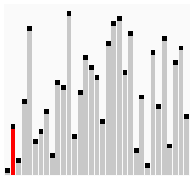

Der BubbleSort arbeitet so, dass er in einer festgelegten Anzahl von Elementen immer zwei benachbarte Elemente nach den gewünschten Eigenschaften vergleicht und ggf. miteinander tauscht. So können z.B. Zahlen in einem Array ihrer Größe (hier die gewünschte Eigenschaft) nach sortiert werden. Man nennt dies ein inplace Verfahren, da nur
Zahlen innerhalb eines Objekts(des Arrays) angesprochen werden. Bei der einfachsten Version des BubbleSort läuft
dieser dabei immer vom Anfang zum Ende des Arrays. Sobald er dieses erreicht hat, beginnt er wieder von vorne.

Es gibt ebenfalls verbesserte Versionen dieses Algorithmus. Eine unterscheidet sich insofern, dass sie nicht immer bis zum Ende des Array durchläuft und dabei alle Elemente vergleicht, sondern der Algorithmus bei jedem Durchlauf ein Element vorher aufhört.

Der ShakerSort ist ebenfalls eine Weiterentwicklung/ Verbesserung des BubbleSorts. Er benutzt ebenfalls den Dreieckstausch und vergleicht zwei benachbarte Elemente. Unterschied ist jedoch, dass er nicht immer von Anfang
bis Ende läuft, sondern beim Ende angekommen, die Richtung wechselt. Die Anzahl der Tauschverfahren bleibt gegenüber dem Bubblesort gleich. (Auch hier kann in weiteren Durchläufen sowohl die Grenze am Ende als auch
am Anfang der Laufzeit geändert werden, sodass nicht mehr alle Zahlen verglichen werden.)

Der Insertionsort vergleicht wie der BubbleSort immer zwei benachbarte Elemente in einem Array. Hierbei unterscheidet sich sehr stark das Vorgehen des Algorithmus, nach dem er erkannt hat, dass zwei Zahlen getauscht werden müssen bzw. der einen eine neue Stelle zugeordnet werden muss. Die größere der Zahlen wird auf den Platz der
kleineren kopiert, dabei ist das vorherige Zwischenspeichern dieser kleineren Zahl nötig. Nachdem dies geschehen ist, wird begonnen, die kleinere Zahl mit den im Array vor ihr angeordneten Elementen zu vergleichen. Sollte die Zahl ebenfalls größer sein, so wird sie eine Stellen nach oben kopiert. Dieser Vorgang wird wiederholt,
bis die Zahl, mit der verglichen wird, kleiner gleich der ausgelagerten ist. Dann wird diese an die Stelle einen höher im Array als die kleinere kopiert. Nachdem diese Schleife also beendet wurde, beginnt nun wieder das einfache Vergleichen von zwei Elementen im Array.